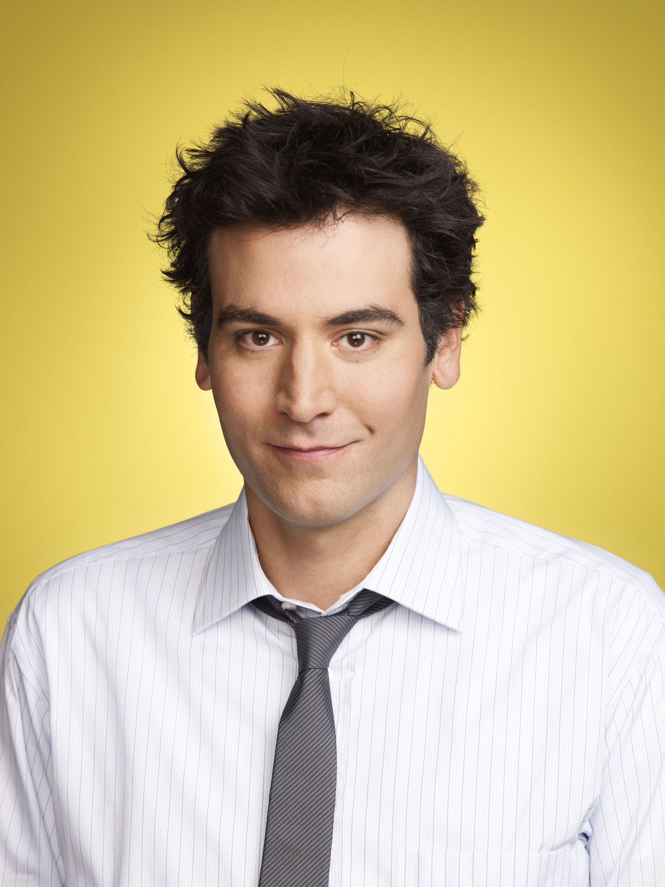
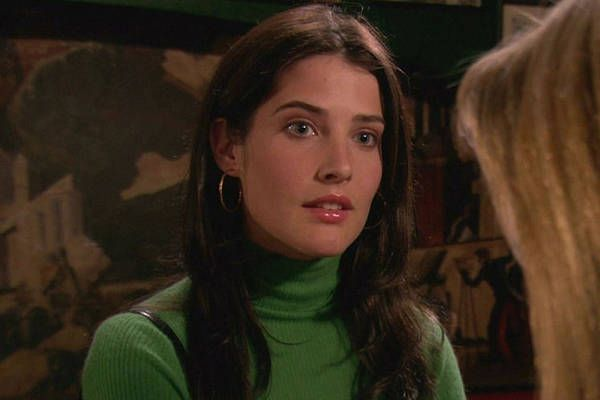
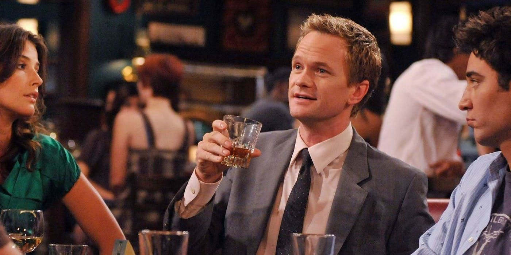

- 
Why Ted is the Villan of HIMYM
Is How I Met Your Mother’s Ted Mosby (Josh Radnor) the good guy he claims to be? Or is his romantic journey more self indulgent and sometimes sinister than he claims it is? What if he's the bad guy?
- 
Robin's "Happy" Ending
Did Robin Scherbatsky (Cobie Smulders) deserve what she got at the end? She spent most of How I Met Your Mother being an aspirational career woman who put ambition before love. So why does her ending still center around who she's with? Watch this video for a closer look at Robin’s shifting life goals, and whether or not her endpoint suits her character. -
- 
Barney and a History of Suits
Barney Stinson is nothing without his suit. What's the deeper symbolism behind his legendary fashion item of choice? And what does the suit identity mean today, after the end of shows such as HIMYM and Mad Men? -